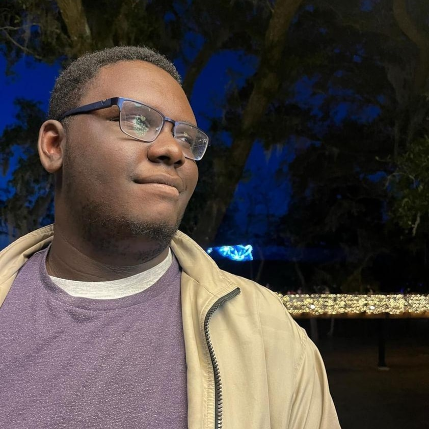
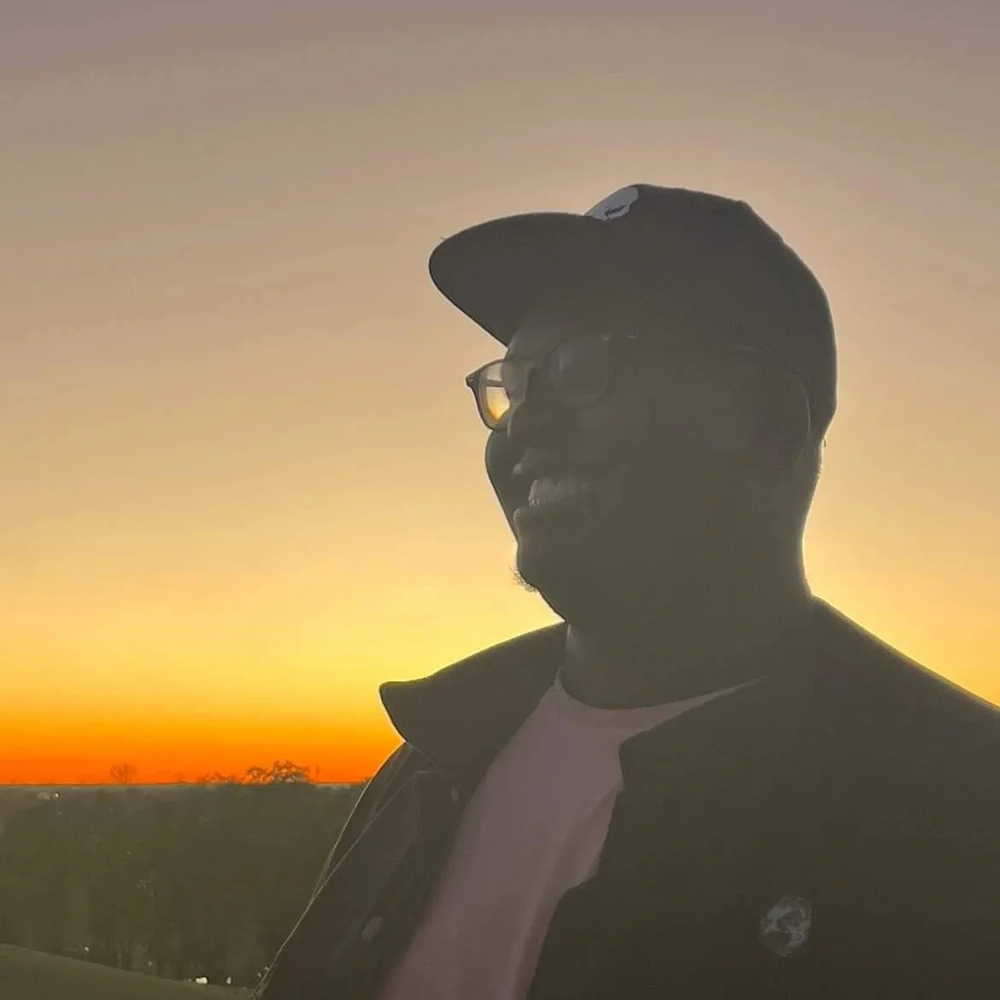

Get to Know the Man behind the Film!


My name is Jahvon Elijah Parker. Here are a couple of things to get to know me, which are fairly simple to remember. First of all, Purple is my favorite color. Most people don't know that the color purple is commonly used as the representation of magic in tons of tv shows and movies. Which brings me to the second thing to know about me. I love the world of fantasy, because there are no limits to what you can create. It's a realm that lets your imagination run free. P.S I also love dragons, like alot.
My Life Goal and Inspirations

My life goal is to create films that make people laugh. My desire is to express my creativity through film and create a platform to leave my mark on the world. Someday, I would like to meet the people who insipre me, so that I can learn from them and keep working to fufill my dream. I've always told myself that if your dream doesn't make you feel like you won't accomplish it or if you feel doubtful of it, then you're not dreaming big enough. At a young age, I've always known that it was my dream to make movies. Since that time, I've had many moments of doubt but that's just my mind and my heart telling me that this dream is bigger than me. This dream is something that will live on past me and I have to make it happen.